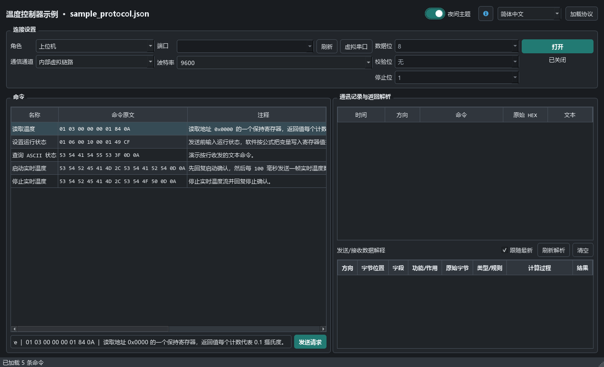
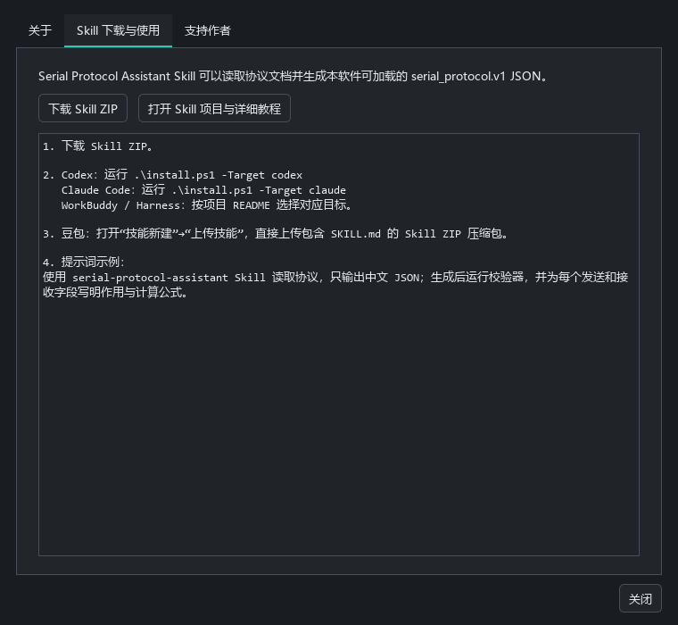
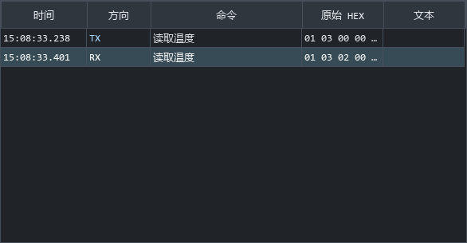
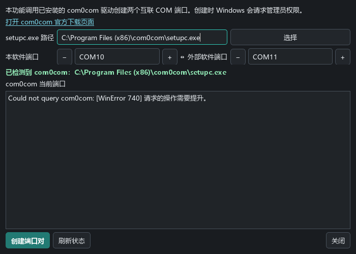
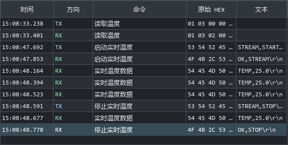
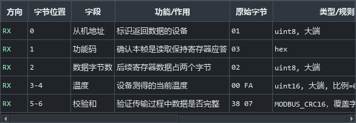

13 步图解 · 下载、安装、协议导入、COM 配对与上下位机测试
Windows 64 位 · 独立 EXE · 内置示例协议
下载 Source code 得到的是源码，不是直接运行的软件。界面语言不会自动翻译用户导入的 JSON 注释。
SerialProtocolAssistant-ZH-CN.exeSerialProtocolAssistant-EN.exe两个版本功能相同，均支持软件内切换语言。
先加载协议，再连接；收发记录和详细解析分别查看

1234图为真实软件界面，当前尚未连接。
Skill 生成 JSON；串口协议助手加载 JSON 执行测试
WorkBuddy 需要配置其技能目录；各客户端的具体入口以其界面和仓库说明为准。

原厂文档 → 单语言 JSON → 软件“加载协议”
先关闭连接再换协议。结构校验通过后，仍需对照原厂报文核实字节和时序。
使用 serial-protocol-assistant Skill 读取附件协议。 只输出中文 serial_protocol.v1 JSON。 动态数据使用变量与协议原文规定的公式。 发送和接收字段都写明位置、作用和计算过程。 完整定义确认帧、周期回复和停止条件。 不明确先提问；生成后运行校验器。
使用内置“温度控制器示例” · 上位机 + 内部虚拟链路
这是示例模拟结果；内部虚拟链路不会出现在其他串口助手的端口列表中。

TX 01 03 00 00 00 01 84 0A RX 01 03 02 00 FA 38 07
示例操作：设置运行状态为“运行”
此自带示例的应答是固定模板，演示时选择“运行”。它不是完整的设备状态机，也不会自动回显所有修改后的参数。
输入：run_state = 1 寄存器：0x0010 发送：01 06 00 10 00 01 49 CF
真实硬件连接和软件内部测试都不需要安装这个驱动
本页为安装流程示意。向导细节可能因包与系统不同；若 Windows 拒绝驱动签名，应检查兼容性，不通过关闭系统签名检查来处理。
识别官方文件名： com0com-3.0.0.0-i386-and-x64-signed.zip 常见安装目录： C:\Program Files (x86)\com0com\ 或 C:\Program Files\com0com\
请使用当前未占用的两个 COM 号；10 和 11 只是示例
截图仅展示真实设置区域，未在本次教程制作时创建新端口。已有可用端口对可直接复用。

检查系统端口 → 刷新列表 → 两个软件分别打开
setupc.exe 是配置工具。只看到“已检测到 com0com”表示找到工具，不等于已完成端口创建或双向通信验证。
└ 端口（COM 和 LPT）
├ … (COM10)
└ … (COM11)
期望的配对关系（示意）： CNCA… PortName=COM#,RealPortName=COM10 CNCB… PortName=COM#,RealPortName=COM11 同一个 COM 口通常只能由一个程序占用。
让串口协议助手主动发送请求，由真实设备返回应答
图示尚未连接。不要把温度控制器示例直接当成你设备的协议；串口电平、接线和 USB 转串口驱动需匹配设备。
COM10：本软件模拟设备 ｜ COM11：你的上位机或串口助手
自动回复要求下位机角色、请求匹配和 auto_reply: true。上位机角色收到请求不会自动模拟设备应答。
外部上位机 COM11 → 本软件 COM10 请求 01 03 00 00 00 01 84 0A 外部上位机 COM11 ← 本软件 COM10 应答 01 03 02 00 FA 38 07
下位机模式等待外部请求；内部链路也可先演练同一流程
截图来自实际内部模拟，非本机虚拟 COM 实测。100 ms 是配置间隔，桌面系统和负载可能造成调度偏差。

启动 HEX： 53 54 52 45 41 4D 2C 53 54 41 52 54 0D 0A 停止 HEX： 53 54 52 45 41 4D 2C 53 54 4F 50 0D 0A
跟随最新看收发，选历史帧看字段；复杂计算按需刷新
示例只用于学习操作。真实设备的寄存器含义、单位与应答规则以原厂协议为准。

RX：01 03 02 00 FA 38 07 [0] 地址 01 | [1] 功能码 03 [2] 数据长度 02 [3–4] 00 FA = 250；250 × 0.1 = 25.0 ℃ [5–6] 38 07：Modbus CRC16，低字节在前
软件截图来自真实 Qt 控件，收发截图使用内置模拟。COM3、COM10、COM11 为配置示例。驱动安装流程与期望设备列表为明确标注的示意图，本次未安装驱动或创建端口。
com0com 由 Vyacheslav Frolov 及贡献者开发，按 GPL 分发。本指南引用官方入口，不重新分发驱动。